Google Chrome
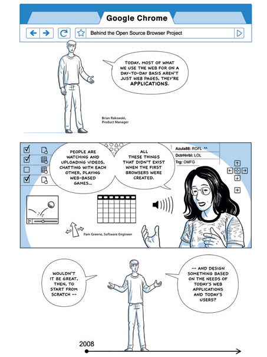
Днём рождения Google Chrome официально считается 2 сентября 2008 года: именно в этот день корпорация официально заявила о создании нового браузера. Кстати, именно тогда же вышла и первая бета-версия, ориентированная на ОС Windows. Начало было положено.
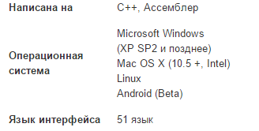
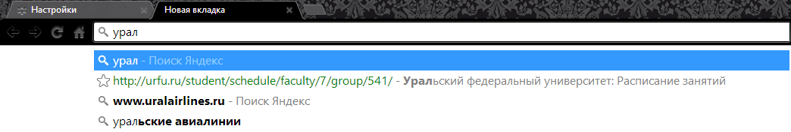
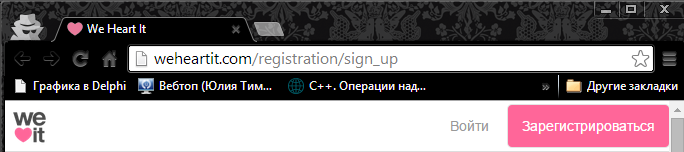
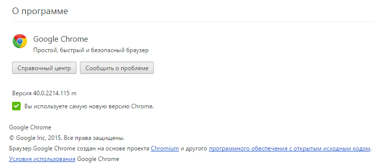
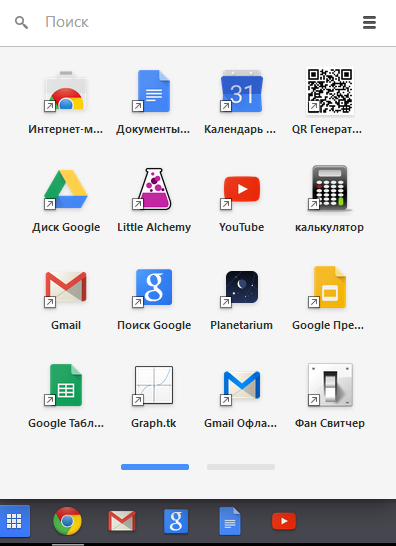
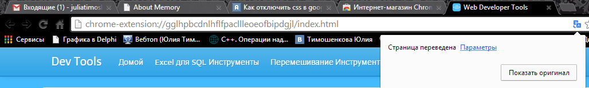
WebKit
Cвободный движок для отображения веб-страниц, разработанный на основе кода библиотек KHTML и KJS, используемых в графической среде KDE.Cвободный движок для отображения веб-страниц, разработанный американской компанией Google Inc. на основе кода WebCore из WebKit для браузера Chromium. Движок анонсирован в апреле 2013. Разработчики Chrome устали бороться с архитектурными отличиями WebKit. Первые версии Blink, представляют собой WebKit, раз и навсегда избавленный от функций, которые не нужны в Chromium. Внесённые изменения упростят разработку браузера, но не повлияют на то, как он отображает страницы.Компоненты:
WebCore - Отображение и библиотека Document Object Model (DOM) для HTML и SVG.
JavaScriptCore — движок JavaScript. Также здесь находится библиотека WTF (Web Template Framework), предоставляющая вспомогательные функции общего назначения для всего WebKit. JavaScriptCore является кроссплатформенным и может использоваться как отдельный компонент без зависимостей от других компонентов WebKit. В новых версиях WebKit Apple заменит JavaScriptCore более современным и быстрым SquirrelFish.
Drosera - Отладчик ошибок, входящий в состав ночных сборок WebKit. Blink
Забавный комикс о работе браузера
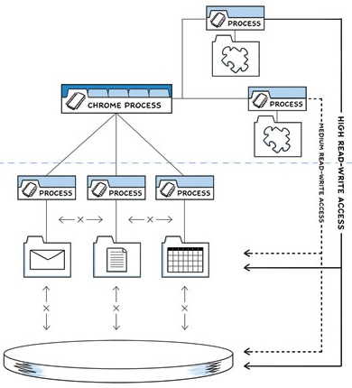
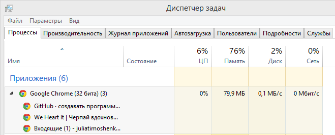
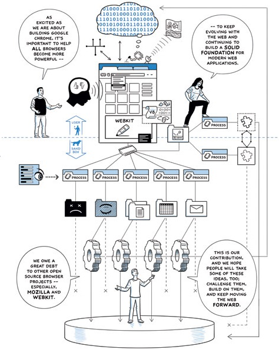
JavaScript
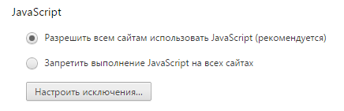
В Google Chrome по-умолчанию включена поддержка JavaScript (ведь браузер "заточен" под сервисы Google которые работают с JavaScript).
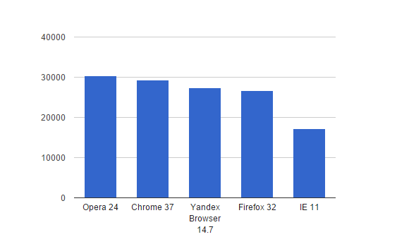
Оценка javascript производительности браузеров
CSS
поддержка CSS2 браузерами
поддержка основных стандартов CSS3 браузерами
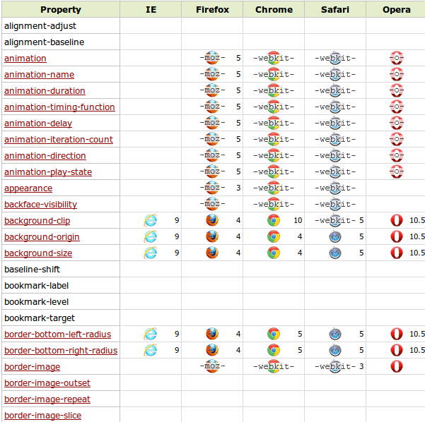
Стоит отметить, что сейчас браузер Google Chrome поддерживает порядка 85% стандартов HTML5, и благодаря движку Blink, основанному на WebKit большую часть станадртов CSS3. Полную информацию о всех поддерживаемых стандартах CSS3 в браузерах можно посмотреть тут
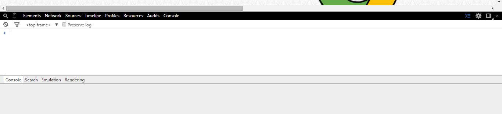 Говорить об истории развития версий браузера Google Chrome совершенно неинтересно.
Каждый новый релиз был заранее спланирован и продуман, не было никакой борьбы за выживание и сложностей.
Лишь постоянный стабильный рост и освоение всё новых территорий рынка.
Благодаря столь слаженной работе, уже очень скоро браузер вышел на первое место в мире, «переселившись» на компьютеры 40% пользователейИнтернета. 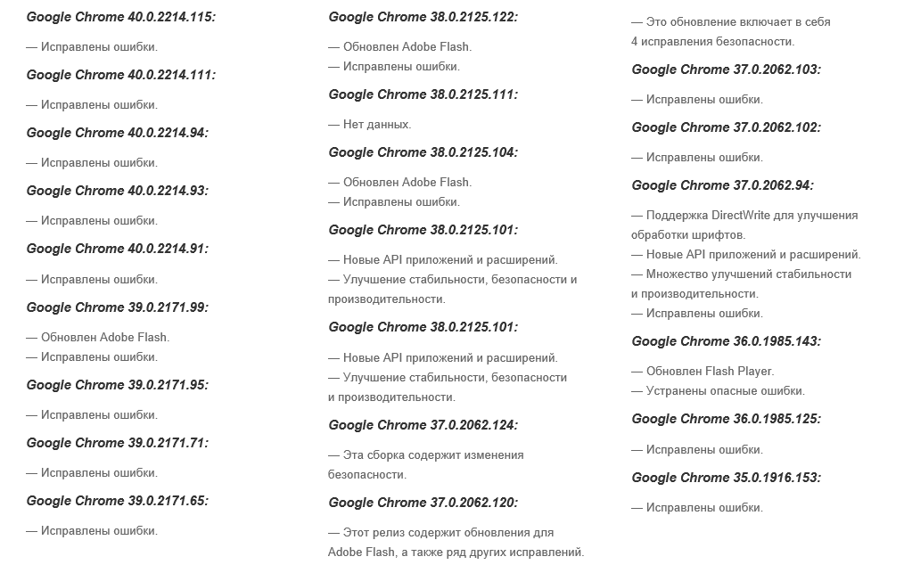 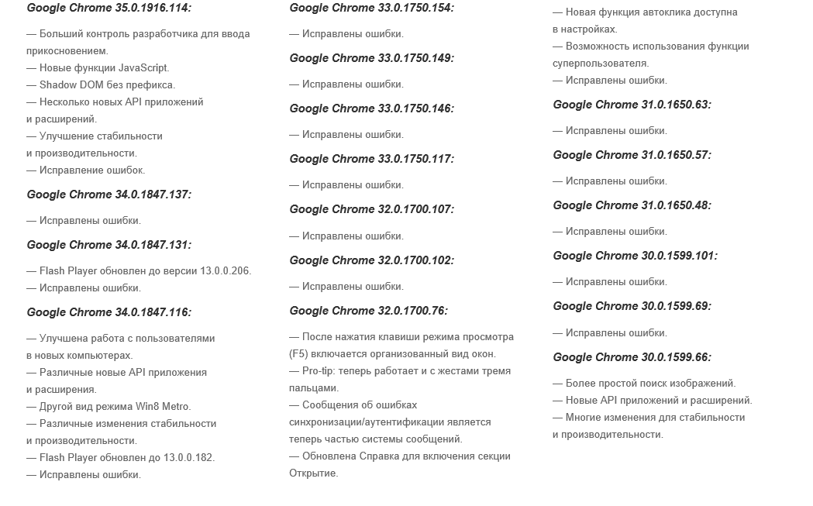 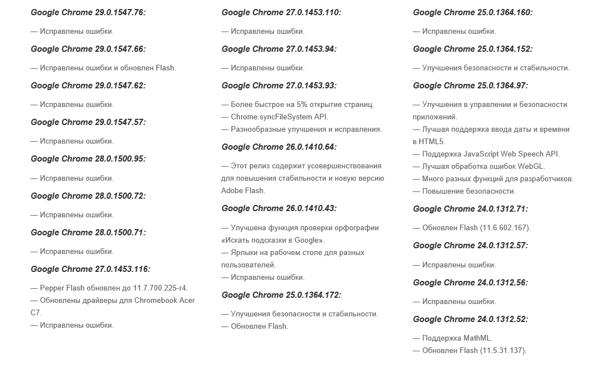 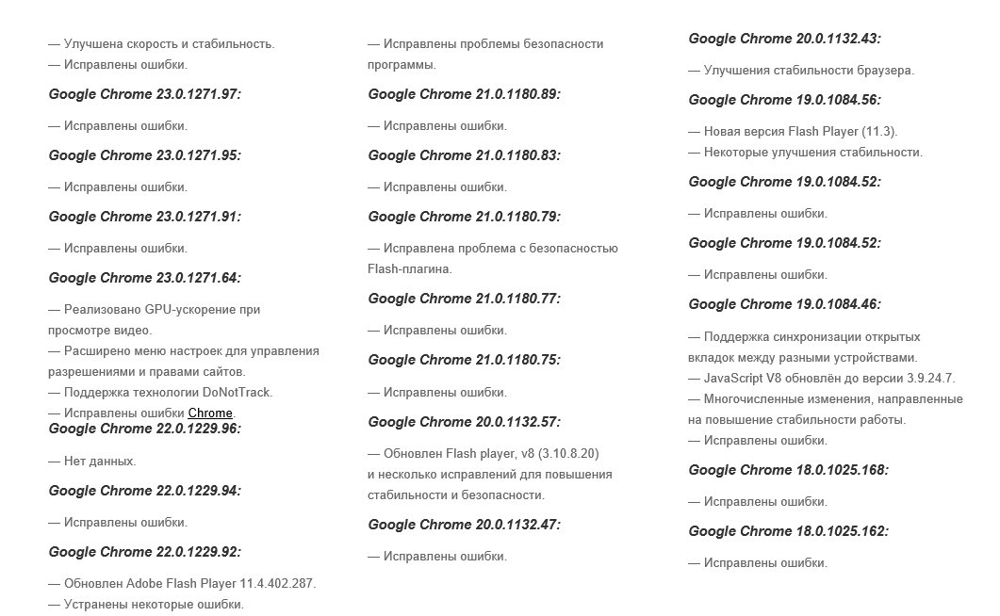 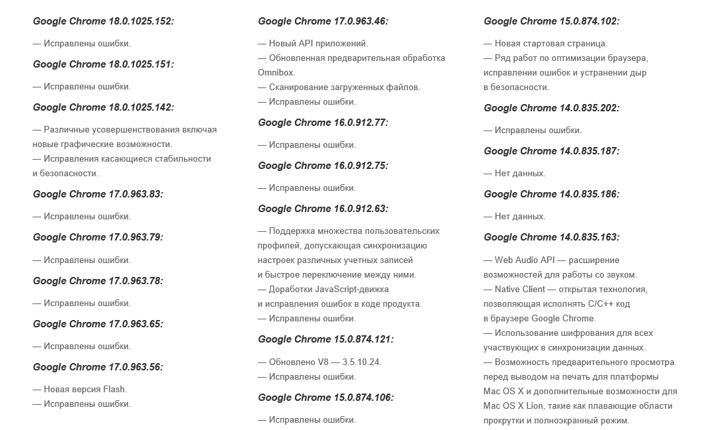 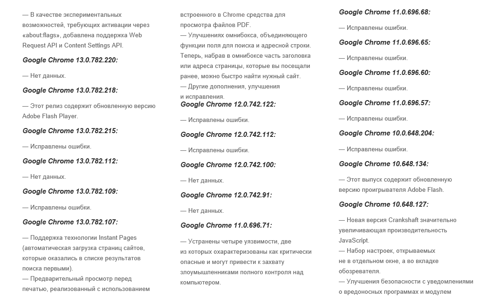 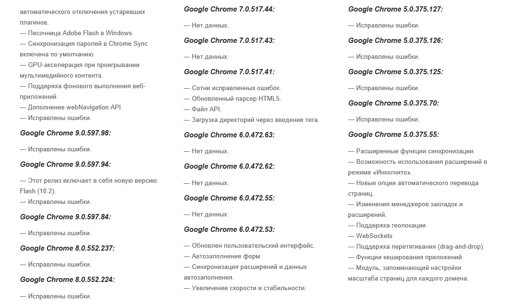 Chrome воплотил много революционных вещей, которыми по праву заслужил место в пантеоне славы. Немного подумав
10 главных преимуществ, благодаря которым Google Chrome столь популярен.
Панели
В рабочем пространстве слева показан исходный код страницы с подсветкой синтаксиса. Причём не только исходный, а отражающий реальную DOM-структуру документа, включая и элементы созданные динамически, которые при обычном просмотре исходного кода не видны.
Этот инструмент подаёт загруженную страницу в виде составляющих: самого файла html, рисунков, стилей css, скриптов, подключенных. А также проводится разбивка на фреймы, если они используются.
В этом разделе показываются все запросы, выполненные при загрузке данной сраницы и её компонентов.
Она очень похожа на Elements, только предназначена для анализа и отладки скриптов.
Это очень полезный инструмент для анализа скорости загрузки страниц сайта. С его помощью можно получить визуальное представление в виде диаграммы, сколько времени затрачено на загрузку и интерпретацию страницы.
Здесь доступны два инструмента:
«CPU Profiles», посредством которого можно посмотреть затраты процессорного времени на выполнение скриптов страницы.
«Heap Snapshots», предназначен для сбора статистики используемой памяти элементами страницы и скриптами. Сколько памяти какой объект использует.
Этот инструмент оценит производительность страницы и сети, а также даст советы по её увеличению.
VI. Безопасность
VII. Верии Google Chrome

10 принципов успеха Chrome